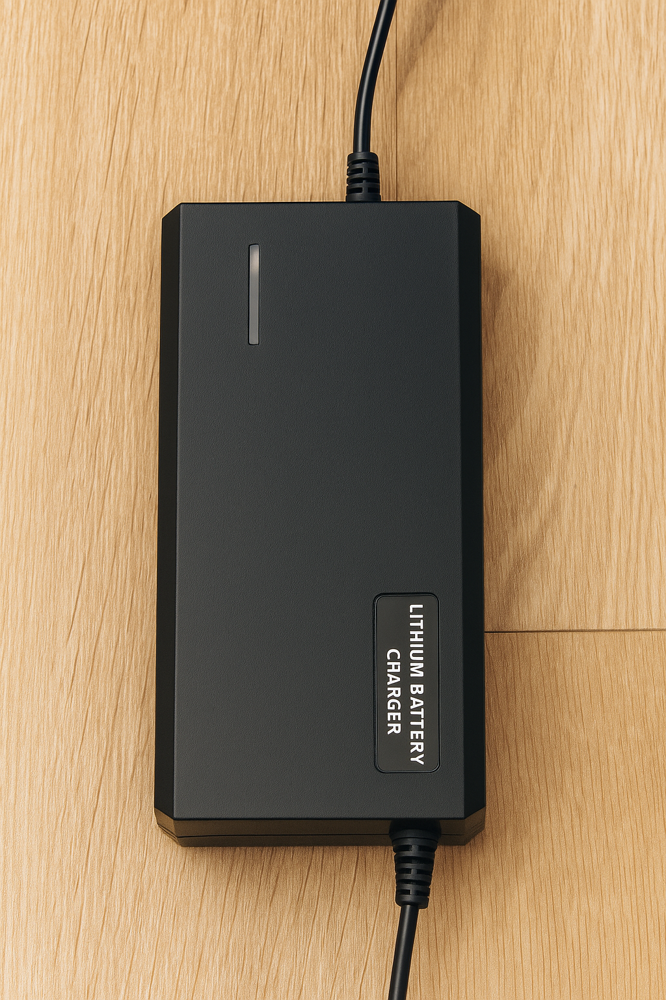
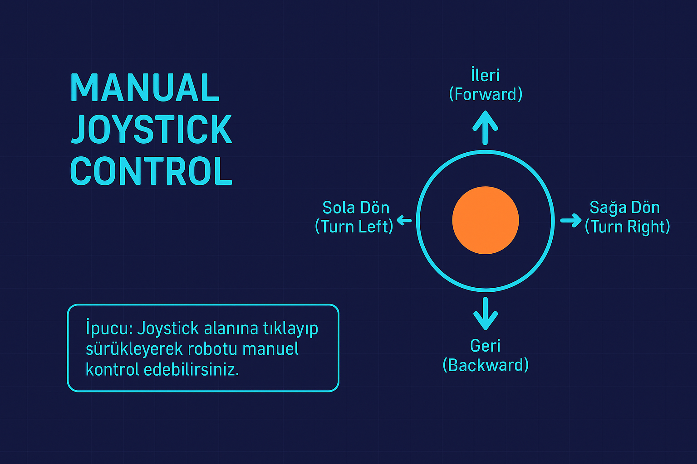
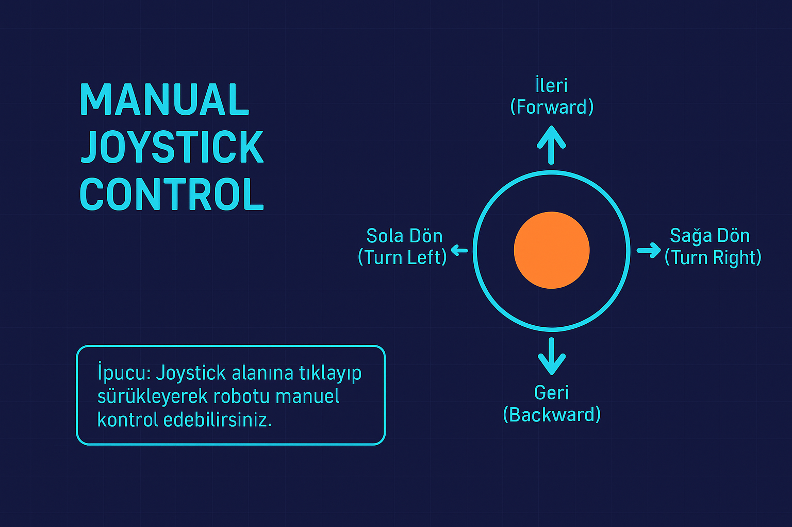

Kullanım Kılavuzu
Robot İlk Kullanım
 Robot üzerindeki siyah konum anahtarı üç pozisyona sahiptir:
Robot üzerindeki siyah konum anahtarı üç pozisyona sahiptir: Sol konum: Robot aktif (çalışma modu)
Orta konum (0): Robot kapalı
Sağ konum: Şarj modu aktif

Başlatma Süreci
İşlem Adımları:
1. Güç Verilmesi:
Robot enerji aldığında sistem başlatma dizisi otomatik olarak başlar.
2. LED Göstergesi – Durum 1:
Başlangıç aşamasında şerit led kırmızı renkte yanar. Bu durum, sistem kontrolünün devam ettiğini belirtir.
3. Sistem Kontrolü:
· Ana kart, sensörler ve iletişim arabirimleri kontrol edilir.
· Servo motorlar ve hareket bileşenleri bekleme konumuna alınır.
4. Kafa Mekanizması Kalibrasyonu:
· Kafa eksenleri sıfır (referans) konumuna getirilir.
5. LED Göstergesi – Durum 2:
Sistem kontrolü ve kalibrasyon işlemleri başarıyla tamamlandığında şerit led yeşil renge döner.
6. Sesli Uyarı: İnternet bağlantısı varsa ve başarılı başlatma işlemini doğrulandıysa sistem kısa bir sesli uyarı sinyali üretir.(Haydi Başlayalım der)
7. Başlatma Tamamlandı: Robot, normal çalışma moduna geçer ve kullanıcı komutlarını kabul etmeye hazır hâle gelir.
Notlar:
· Eğer başlatma süreci sırasında bir hata algılanırsa, LED’ler kırmızı yanmaya devam eder ve sistem çalışmayı durdurur.
· Hata kodları ve sinyal desenleri, sistem hata tablosunda tanımlanmıştır.
Şarj Etme ve Batarya Kullanma İşlemi
Şarj adaptörünün soketini robot üzerindeki şarj girişine güvenli şekilde bağlayın.
Şarj işlemini başlatmak için konum anahtarını sağa çevirin.
Şarj işlemi tamamlandığında anahtarı tekrar 0 (orta) konumuna alın.
Şarj soketini yalnızca anahtar 0 konumundayken çıkarın.
Şarj cihazı üzerindeki gösterge LED’leri, şarj durumunu kullanıcıya bildirir:
· Kırmızı ışık yandığında batarya şarj olmaktadır.
· Yeşil ışık yandığında ise şarj işlemi tamamlanmıştır ve batarya kullanıma hazırdır. 
Uyarılar ve Güvenlik Önlemleri

· Konum anahtarı sağ konumdayken, robot üzerindeki şarj soketi elektrik altındadır; soket uçlarına elle dokunmayın.
· Buton sağ konumdayken soket ve bağlantı noktalarını iletken malzemelerle temas ettirmeyin (metal aletler, anahtar, kablo uçları vb.).
· Şarj aleti prize takılıyken, şarj adaptörünün kendi soket uçlarında da elektrik bulunur; adaptörün uçlarına kesinlikle dokunmayın.
· Şarj soketinin takma ve çıkarma işlemlerini mutlaka 0 (orta) konumunda gerçekleştirin.
· Yalnızca üretici tarafından önerilen ve uyumlu şarj adaptörlerini kullanın.
· Kablo veya sokette hasar tespit edilmesi durumunda şarj işlemine devam etmeyin; teknik servise başvurun.
· Şarj sırasında robotu aşırı sıcaklık, sıvı teması veya yanıcı yüzeylerden uzak tutun.
Kullanım Modları
Manuel Kullanım
Manuel kullanıma iki yerden erişelebilir:
- Robot sayfasındaki kontrol panelden robot kontrol ile joystick kullanımı;
 ➡️

➡️

- Öğretmen Panelindeki sınıflara girilip robot bağlantısı sağlandıktan sonra manuel butonu ile gelen joystick kullanımı;


Otonom Kullanım
Otonom kullanım için navigasyon moduna geçilmesi gereklidir. Navigasyon modu detatylı olarak ------------------ kısmında anlatılmaktadır.
Kalibrasyon
Robot kafa ve çizgi izleyen olmak üzere iki kısımda kalibrasyon alır. Robot açıldığı anda kafa kalibrasyonunu şekilde gösterilen videodaki gibi alır.
LED Komut Tablosu
🟩 Mat Üzeri LED Durumları
| Komut Adı | Mod | Renk | Açıklama |
|---|---|---|---|
| ileri | 2 | Camgöbeği | İleri hareket — yanıp sönme efekti |
| right | 2 | Sarı | Sağa dönüş — yanıp sönme efekti |
| left | 2 | Sarı | Sola dönüş — yanıp sönme efekti |
| error | 2 | Kırmızı | Genel hata — kırmızı yanıp sönme |
🌠İnternet Durumları
| Komut Adı | Mod | Renk | Açıklama |
|---|---|---|---|
| online | 3 | Yeşil | Cihaz çevrimiçi — parlaklık azalma |
| hotspot | 3 | Turuncu | Hotspot aktif — turuncu parlaklık azalma |
| change_mode | 3 | Sarı | Mod değişimi sırasında uyarı |
🤖 Navigasyon Durumları (nav2)
| Komut Adı | Mod | Renk | Açıklama |
|---|---|---|---|
| reached | 5 | Yeşil | Hedefe ulaşıldı |
| active | 6 | Camgöbeği | Aktif navigasyon |
| status | 5 | Açık Mavi | İstasyon ekleme/silme işlemi |
| complate | 2 | Yeşil | Görev tamamlandı |
🚨 Hata Kodları
| Kod | Mod | Yanıp Sönme Sayısı | Renk | Açıklama |
|---|---|---|---|---|
| error 1 | 4 | 1 | Kırmızı | [1] Navigasyon hatası (nav2 failed) |
| error 2 | 4 | 2 | Kırmızı | [2] Batarya hatası |
| error 3 | 4 | 3 | Kırmızı | [3] IMU'dan yanlış veri gelmesi |
| error 4 | 4 | 4 | Kırmızı | [4] İnternet bağlantısı yok |
| error 5 | 4 | 5 | Kırmızı | [5] Genel Sensör Hatası |
| error 6 | 4 | 6 | Kırmızı | [6] Navigasyon Hatası |
Hotspot Ayarları
Hotspot ayarını robotun internet bağlantısı kesilip etraftaki hiçbir network ağına bağlanamadığında yapınız.
Robotun şerit ledi turuncu yanıp sönüyorsa hotspot'a düştüğünü anlayabiliriz.

Adım 1: Cihazınızın arayüzünden Wi-Fi bağlantı ayarları menüsüne giriş yapın.

Adım 2: Robotun kendi adıyla yayınladığı Hotspot ağına bağlanın. Şifre: Nct.2525

Adım 3: Cihazınızın tarayıcısına 10.42.0.1 yazarak bu IP'yi aratın.

Adım 4: Arayüzde yer alan ROS Status göstergesinin “Connected†konumunda olduğundan emin olun. Durum “Connected†değilse sayfayı yenileyerek bağlantıyı tekrar kontrol edin.

Adım 5: Arayüzde Connected Wi-Fi: Hotspot ifadesinin görüntülenmesi için Scan Wi-Fi butonuna basarak ağ taraması başlatın.

Adım 6: Bağlanmak istediğiniz yerel kablosuz ağa geçmek için Connect to New Network butonunu seçin. Açılan ekranda yalnızca bağlanacağınız ağın SSID (ağ adı) ve şifresini girin ve Connect butonuna basarak işlemi tamamlayın.
Tüm işlemler tamamlandıktan sonra robotun şerit ledini kontrol edin. Led 4 kez kırmızı yanıp sönüyorsa bağlanmaya çalışıyordur. İşlemin ardından yeşil ışık yanacaktır.